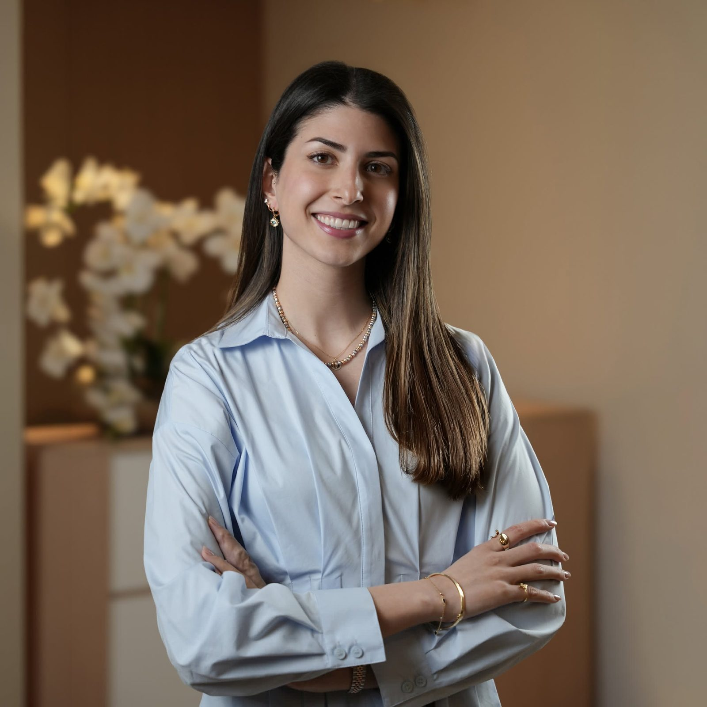

جامعة غويلف
بكالوريوس العلوم التطبيقية (مرتبة الشرف) في التغذية البشرية
الأساس: الكيمياء الحيوية، وعلم وظائف الأعضاء، وكيف يعمل الغذاء داخل الجسم.
تغذية شخصية مبنية على العلم للوزن والسكري وصحة الهضم والقلب — في عيادتنا عند الدوار الخامس أو أونلاين.

في عيادتنا، تبدأ كل خطة منك — تاريخك الصحي، تحاليلك، وروتينك اليومي. نحوّل الدليل السريري إلى تغذية عملية وشخصية: بلا حميات عشوائية، بلا تخمين، ونتائج تدوم.
تشرف على رعايتك نور مشربش، ماجستير، RD — تدرّبت في كندا، وتضع سنوات من الخبرة في المستشفيات في كل استشارة.
عمق سريري للحالات المعقّدة، وإرشاد يومي واضح لكل ما عداها.
خسارة دهون مستدامة تحافظ على العضلات — مع قياس دقيق للدهون مقابل احتباس الماء — وتغذية متخصصة قبل جراحات السمنة وبعدها.
سكر أكثر استقراراً من خلال وجبات يمكنك الاستمرار عليها — لمقاومة الإنسولين والسكري من النوعين الأول والثاني.
الانتفاخ والقولون العصبي والسيلياك وفرط نمو البكتيريا (SIBO) ومحور الأمعاء والدماغ — بتقييم دقيق لا بالتخمين.
تغذية لتوازن الهرمونات وللتغيّرات المصاحبة للعمر وسن الأمل — مع الحفاظ على الكتلة العضلية مع التقدّم في السن.
أنظمة DASH والبحر المتوسط، مكيّفة للمطبخ الأردني، لحماية قلبك على المدى الطويل.
رعاية بخبرة المستشفيات لأمراض الكلى والأورام والحالات المعقّدة — بما في ذلك دعم التغذية الأنبوبية والوريدية.
من الأطفال إلى الأجداد: تغذية الأطفال والبالغين وكبار السن.
منظور معتمد يبحث في جذور المشكلة، وينظر إلى الجسم كمنظومة متكاملة لا إلى العَرَض وحده.
تقييم سريري شامل: التاريخ المرضي، والتحاليل، والأدوية، والروتين اليومي، وتفضيلاتك الغذائية. بلا قوالب جاهزة، وبلا أحكام.
خطة شخصية مبنية على حياتك الفعلية: وجبات العائلة، ساعات العمل، رمضان، والسفر. طعام حقيقي بكميات مناسبة.
جلسات متابعة منظّمة لمراجعة التقدّم والتحاليل، وتعديل الخطة مع تغيّر جسمك وجدولك.
الهدف هو استقلاليتك: عادات ومعرفة تستمر بعد انتهاء جلساتنا بوقت طويل.
يبدأ كل برنامج بتقييم شامل. اتصل بالعيادة لمعرفة الرسوم والمواعيد المتاحة.
تقييم غذائي سريري كامل وخطتك الشخصية الأولى.
تقييم شامل مع جلسات متابعة منتظمة للوزن أو السكري أو صحة الهضم أو القلب.
رعاية متخصصة للحالات المعقّدة بالتنسيق مع فريقك الطبي.
دقيقة جداً وتأخذ وقتها لتفهم احتياجاتك. تقدّم خيارات عملية تناسب حالتك وتشرح كل شيء بوضوح.
من قرابة 73 كغ إلى 65 كغ — والرحلة مستمرة. محترفة ومتفهّمة وصبورة جداً.
معرفة نور يوازيها اهتمام حقيقي وقدرة على تحويل العلم إلى إرشاد عملي وشخصي.
مستمعة رائعة أخذت وقتها لتفهم تاريخي الصحي ونمط حياتي وأهدافي.
تعطيك وقتاً لفهم حالتك، وتقدّم نظاماً غذائياً مريحاً يسمح لك بالاستمتاع بالأطعمة التي تحبها دون شعور بالحرمان.
مركز دحدلة، شارع كمال جنبلاط 19 — الدوار الخامس، عمّان. الطابق الأول، عيادة 108. وتتوفر الاستشارات أونلاين أيضاً.
نتائج تحاليل الدم الحديثة إن وُجدت، وقائمة بالأدوية والمكمّلات، وصورة صادقة عن يوم غذائي اعتيادي.
لا. تُبنى الخطط حول ثقافتك وتفضيلاتك، فنعدّل الكميات والتوازن بدلاً من منع الأطعمة.
نعم، تغذية الأطفال والبالغين وكبار السن، بما في ذلك التغذية الأنبوبية والدعم الغذائي المنزلي.
نعم. تتبع الجلسات أونلاين نفس خطوات التقييم والخطة والمتابعة المعتمدة في العيادة.
دائماً. كل خطة مبنية على أحدث الإرشادات السريرية، بإشراف نور مشربش — أخصائية تغذية مسجّلة في كندا ومرخّصة في الأردن، وتحمل ماجستير من جامعة ماكغيل.
زر العيادة عند الدوار الخامس أو احجز استشارة أونلاين. اتصل أو راسلنا على واتساب لاختيار الموعد المناسب.
+962 7 9008 1108